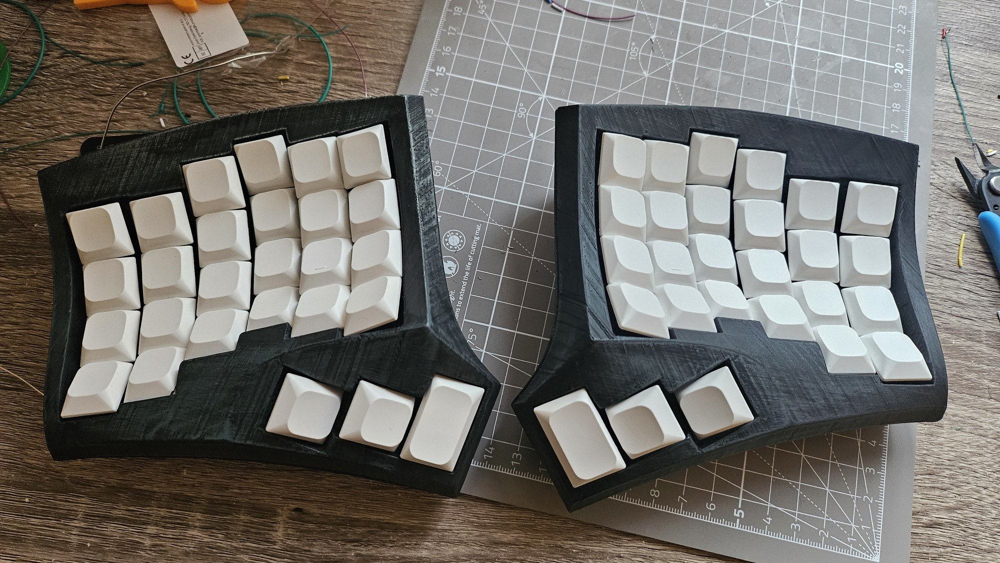

Some fun stuff I’ve worked on.
Educational compiler written in C++ for the Tiger language. More context in the teaching section.
I started working on Tiger as a maintainer when I was still a student
in 2020 and worked on improving the instruction selection process by
switching from a custom code generator (monoburg)
to native C++ “pattern-matching” using std::variants and
std::visit. I’d call that a mixed result: deprecating
monoburg was a success and meant we had one less project to
maintain, but trying to match dynamic patterns with static variants
meant that composite patterns were impossible and the matching process
is very clunky and can result in error messages thousands of lines long
(thank C++ templates)1. Back then, I was expecting that
pattern-matching would eventually show up in a C++ version update2, but I guess that’s not happening
any time soon so a student is currently working on rewriting this
without std::variants.
Another topic I experimented with back then was adding support for functional programming through closure conversion. The main part of the codebase was not to be touched so I tried to leave the middle-end alone and resolve almost everything in the front-end through a large desugaring pass (similar to what we actually do with objects). I somehow managed to get it to work, although the result was not pretty, and ended up being left aside due to bikeshedding on the syntax for calls to function pointers3.
Nowadays, my work mostly revolves around helping the new students maintainer take their marks, reviewing their work, and deciding the direction the project takes.
Not technically programming, but close enough. I use split minimalist keyboards and they’re a lot of fun, especially using combos.
I’ve had a GBoards gergoplex since 2021 and it’s great. It was cheap enough to get it delivered directly built from Canada and I haven’t had any issue with it since I got it. It even survived a catastrophic incident involving a spilled coffee cup over its bare PCB, somehow. GBoards seem to have closed shop, which is a shame because their keyboards were great.
My other main keyboard is a 4x6 Dactyl Cygnus from Juha Kauppinen which I handbuilt in late 2024.

I wanted to have a keyboard for home which I could use both for work and gaming, so I figured I’d need a number row and dedicated tab/shift/control keys. After days (and nights) of 3D printing the case and a couple days of soldering, I’m quite satisfied of the end result. If I were to do it again I’d probably only do one half in 4x6 and the other in 3x5 as I don’t use most of the “extra”4 keys on the right hand side.
Technically a project I guess. Built with from Markdown using
pandoc, sed, make and some duct
tape. It’s not much but it’s mine – and way simpler than any static code
generator I could find.
Thanks to this post for giving enough motivation to get started, and these blogs for inspiration on building this using pandoc.